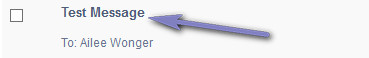
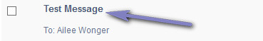

Mailbox
Overview
Internal messaging system for support team. Please read carefully. Click example images to display full size version in new tab/window.
Screenshot - Main Screen
{kind=link}
Search
Click the icon to display the search box. If viewing message (below), click the icon to display
the printer friendly version.
Folders
Inbox, Outbox and Bin are system folders. The Bin has additional options as shown below. Click the tabs to view each folder. Click "Folders > Manage Folders" to add custom folders. If additional folders
aren`t enabled for staff member, this option won`t be seen. More info on managing folders below.
Operations - Move Selected To
Messages can be moved between folders via the "Move Selected To" option. Check the messages you wish to move and then select a new folder from this menu.
Operations - Mark as Read/Unread
Messages can be marked as read or unread via the buttons shown. Check the messages you wish to mark and then click the relevant button.
= Read
= UnRead
Messages marked as unread will turn the title into bold text.

= Read
= UnRead
Messages marked as unread will turn the title into bold text.

Screenshot - Message View Screen
{kind=link}
Screenshot - Compose
{kind=link}
Compose Options
Subject - Enter subject for private message.
Message - Enter message.
Select Staff Member(s) - Select staff you wish to send message to. Multiple are supported via the checkboxes.
Message - Enter message.
Select Staff Member(s) - Select staff you wish to send message to. Multiple are supported via the checkboxes.
Screenshot - Bin
{kind=link}
Delete
To delete any messages, click the relevant checkboxes and then click the button. A prompt will appear asking you to confirm your action. Note
that deletions cannot be undone once actioned. If permissions aren`t sufficient, this option may be hidden.
Empty Bin
Click this button to empty all messages from the bin.
Screenshot - Managing Folders
{kind=link}
Manage Folder Operations
Click the + button add a new folder and enter a new folder name. Note that you must click "Update Folders" before any actions are actually performed. Likewise
with removing a folder clicking the will remove the folder from view, but it won`t be deleted until you click "Update Folders".
A prompt will appear asking you to confirm your action for both adding and deleting. Note that deletions cannot be undone once actioned and any messages in a folder will be deleted if the folder is removed.
A prompt will appear asking you to confirm your action for both adding and deleting. Note that deletions cannot be undone once actioned and any messages in a folder will be deleted if the folder is removed.